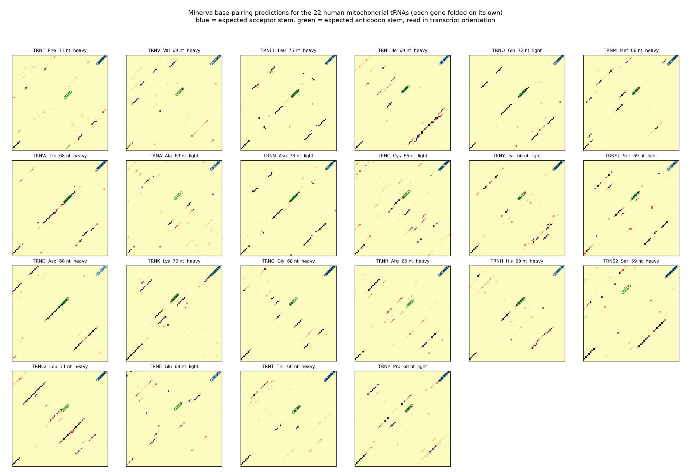
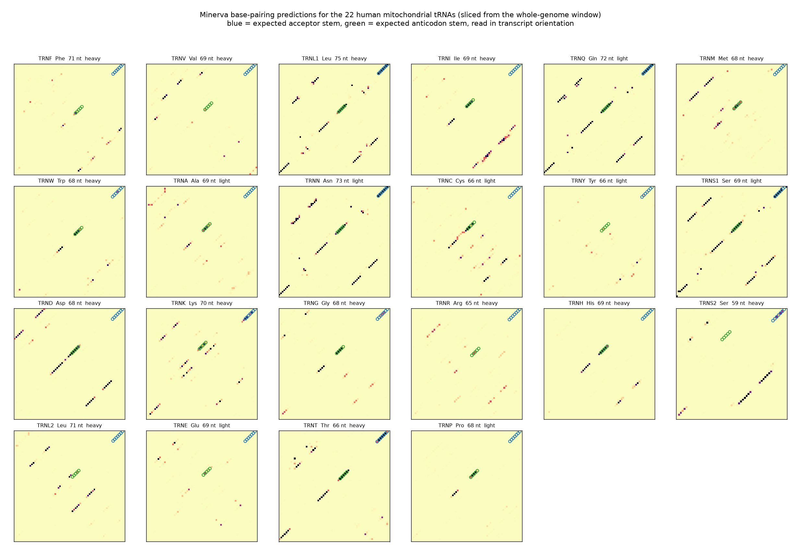

A working lab notebook. Updated as we go.
Your cells have a second, tiny genome inside the mitochondria — the parts of the cell that make energy. It is about 16,500 letters long, versus 3 billion in the main genome.
That small genome picks up damage as you age. A lot of that damage lands on tRNAs — 22 little molecules that ferry protein building blocks around.
A tRNA is a strand of letters that folds back on itself into a shape like a four-leaf clover. The shape is the whole point. Wrong shape, broken tRNA, and the cell loses the ability to build proteins properly. Several well-known diseases work exactly this way.
The question: can we predict which letter changes wreck the shape?
If we can, we get a way to sort harmless variation from real damage — without needing a lab.
Minerva is an AI model trained on bacterial DNA. It learned to spot which parts of a genome touch each other when it folds up.
Mitochondria used to be free-living bacteria, billions of years ago. They still carry their own bacterial-ish genome. So a bacterial model might just work on them — untested, which is what makes it interesting.
Minerva does not read raw DNA. It wants a specific format: genes written out as protein, everything else as lowercase DNA, with markers saying which direction each piece runs.
We took the standard human mitochondrial reference sequence (rCRS, NC_012920.1) and converted it.
The problem: the model can only read 8,192 units at a time. The full circular genome came to 9,040 — about 10% too long.
The fix: mitochondrial DNA is a loop, so it has no natural start or end. We cut the loop at the control region, a stretch that contains no genes at all. That dropped it to 7,918 units, which fits, and we lost nothing we care about — all 22 tRNAs are still there.
We also built a lookup table mapping every character back to its exact position in the reference, so later steps can point at a specific letter. Tests check this against the real sequence letter by letter.
Two oddities worth knowing: position 3,107 of the reference is a placeholder letter that does not really exist (it is kept so the numbering matches the original 1981 sequence). And two pairs of genes physically overlap, sharing the same letters in different reading frames.
This was the go/no-go. If the model could not find the clover shape, the whole project was dead and we would have had to retrain it from scratch.
How we checked. We did not use a hand-curated answer key. Instead we used two features every clover must have, which we know from the sequence alone:
We also ran 200 decoys: random chunks of the same genome, same length, that are not tRNAs. If the model calls those clovers too, it is just guessing.
Results:
| what we fed it | acceptor stem found | tRNAs mostly right |
|---|---|---|
| one tRNA on its own | 72% | 17 of 22 |
| the whole genome at once | 24% | 5 of 22 |
| ViennaRNA (the standard old tool) | 83% | 19 of 22 |
Decoys scored essentially zero. So when Minerva calls a clover, it means it — it is not just sticking the ends of any short sequence together.
The twist: context breaks it. Give the model the tRNA plus just 50 letters of its real neighbours and performance collapses from 69% to 30%.
That is the opposite of what we expected. We chose mitochondrial DNA because the whole thing fits in one window — and one big window turns out to be the model's worst setting.
Verdict: go, with a change of plan. Feed tRNAs one at a time. On the anticodon stem — the part that matters most for disease — Minerva actually beats the old tool, 55% to 35%. And the tRNA behind the most famous mitochondrial disease mutation comes out perfect in every setting.
Side benefit: single tRNAs are tiny, so everything runs in milliseconds. No GPU needed.


Now the actual experiment. For all 22 tRNAs, change every letter to each of the three alternatives and measure the damage. That is roughly 4,600 mutations.
Each one gets two independent scores:
These two can disagree, and that is the interesting part: a mutation might leave the shape intact but still look deeply wrong to the model, or vice versa.
On a laptop, no GPU.
The two scores barely agree with each other (correlation 0.19). That is the encouraging part: they are not measuring the same thing twice. Shape damage and surprise are genuinely separate signals, so combining them should beat either one alone.
First look at the famous one. m.3243A>G — the mutation behind MELAS, a serious mitochondrial disease — lands in the 96th percentile for surprise across all 4,524 mutations. The model strongly expects the original letter there.
On shape damage alone it is only middling, 56th percentile. So the shape score by itself would have missed it, and the surprise score caught it.
One data point is not evidence. Step 4 is the real test.
4,524 mutations scored across 22 tRNAs.
The best-known mitochondrial disease mutation, m.3243A>G, scores in the 58th percentile for shape damage out of all 4,524 mutations tested.
| mutation | tRNA | folding lost | surprise |
|---|---|---|---|
| m.14725A>C | TRNE | 100% | -0.4 |
| m.14724C>G | TRNE | 100% | 0.2 |
| m.4372G>A | TRNQ | 91% | -4.9 |
| m.4372G>C | TRNQ | 91% | -8.9 |
| m.4372G>T | TRNQ | 91% | -5.5 |
| m.4361T>G | TRNQ | 91% | -5.2 |
| m.4360C>G | TRNQ | 91% | -8.3 |
| m.14726T>C | TRNE | 89% | -1.7 |
| m.14725A>T | TRNE | 89% | -0.1 |
| m.14724C>A | TRNE | 89% | 0.6 |
Surprise is a log-ratio: more negative means the model is more confident the original letter belongs there.
The final test. Do our scores actually pick out real disease mutations?
The data. MITOMAP, the usual catalogue, blocks automated access. We used ClinVar instead — NCBI's public variant database, same source we got the reference sequence from. Filtering to single-letter changes inside the 22 tRNAs gave 363 labelled variants: 52 disease-causing, 311 harmless.
The measure. Pick one disease mutation and one harmless one at random. How often does the score rank the disease one as worse? That is the AUC. 0.5 is a coin flip. 1.0 is perfect. A tool people actually use scores about 0.9.
| score | AUC | |
|---|---|---|
| Minerva — shape damage | 0.53 | coin flip |
| Minerva — surprise | 0.58 | barely better |
| Minerva — surprise, with context | 0.49 | coin flip |
| Minerva — best combination | 0.60 | weak |
| ViennaRNA — structure change | 0.52 | coin flip |
| ViennaRNA — destabilisation | 0.66 | weak, but better |
Minerva lost to the 30-year-old physics tool, 0.60 to 0.66. The gap is not statistically firm (95% CI −0.16 to +0.04), so the fair reading is "no better", not "clearly worse".
Either way, neither is good enough to be useful. Published tools for this exact job score around 0.9.
We re-ran it keeping only the most confident labels — same answer.
The pitch was that Minerva reads folding from a single sequence, with no need to compare across species. The tools that score 0.9 do exactly that comparison: they check whether a letter stayed the same across millions of years of evolution. That turns out to carry most of the signal, and Minerva has no access to it.
Adding context made the surprise score worse — down to a coin flip. That matches what we found in step 2: this model gets confused by real genomic neighbours. It is trained on bacteria, and mitochondrial DNA is packed far more tightly than any bacterial genome.
Both are worth knowing. The second one is why we are stopping here rather than building on it.
Each row is one commit. The notebook above is rebuilt from the repository after every step, so it never drifts from the code.
| commit | date | what changed |
|---|---|---|
| 0b9293f | 2026-09-28 | Demote note headings so step titles stay dominant on the site |
| 47c2baa | 2026-09-28 | Step 3: 4,524 mutations scored across all 22 tRNAs |
| fc9838e | 2026-09-28 | Add step 3 mutation scan and the lab-notebook site |
| 2d68488 | 2026-09-28 | Step 2: Minerva folds mitochondrial tRNAs, but not in genomic context |
| dcfc635 | 2026-09-28 | Full window runs on CPU in 3 minutes; no GPU needed for step 2 |
| c73fda4 | 2026-09-28 | Step 1: rCRS to Minerva mixed-token input |